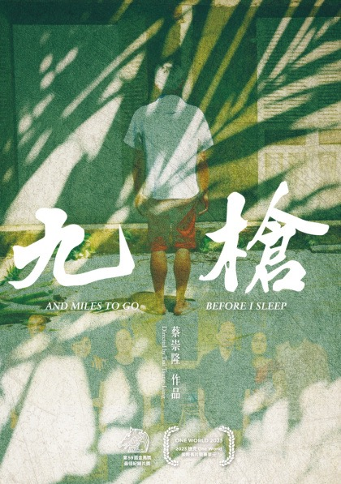

Beyond Festivals and Streamers
How films find audiences, unlock value, and drive impact. And what AI is about to change.
不只是影展與串流平台：影片如何找到觀眾、釋放價值、創造影響力，以及 AI 即將改變的事。
How Giloo Connects Films with Asian Audiences
Hi, I'm Ruru, and I lead programming and marketing at Giloo, a Taiwan-based curation platform for documentary, art-house, and issue-driven films.
We connect independent films with the right audiences across Asia, and help filmmakers from around the world find their audiences here.
大家好，我是 Ruru，在 Giloo 負責節目策劃與行銷。Giloo 是一個來自台灣的策展平台，專注於紀錄片、藝術電影與議題型電影。我們幫助獨立電影在亞洲找到對的觀眾，也幫助世界各地的創作者在這裡找到他們的觀眾。
We built Giloo on audience relationships, not just a content library.
In a market the size of Taiwan, this gives us something more valuable than reach and traffic: trust, engagement, and community access.
Giloo 不是只靠「有很多片」建立起來的，而是靠長期經營觀眾關係。在台灣這樣規模的市場裡，這讓我們擁有比觸及率和流量更重要的東西：信任、互動，以及進入社群的能力。
What audience relationships look like.
28 萬以上電子報訂閱者、37% 平均開信率、2,000+ 創作者與合作夥伴、9,000+ 策展電影筆記。
It's not a content problem. It's a distribution problem.
The industry has solved how to make more films. It has not solved how the right audiences discover them.
Most good films never reach the audience that would love them. The film is out there. No one helps people find it.
這不是內容的問題，而是發行的問題。產業已經解決了「如何拍出更多電影」，卻還沒解決「對的觀眾如何找到它們」。大多數好電影，從未觸及那些會愛上它們的觀眾。電影就在那裡，卻沒有人幫觀眾找到它。
Access is not the same as audience understanding.
Most distribution tells you where a film was screened or released. But for filmmakers, the harder question is where the next audience is.
Giloo helps filmmakers see what happens after release: who responded, who started talking, and where the story can travel next.
能被看見，不等於真正理解觀眾。大多數發行只告訴你影片在哪裡放映或上架，但更難的問題是：下一批觀眾在哪裡？Giloo 幫助創作者看見上映之後發生了什麼：誰有反應、誰開始討論，以及這個故事接下來可以走向哪裡。
From data to audience strategy.
Data tells you what happened. Audience understanding tells you what to do next.
For issue-driven films, the value is not only exposure. It is knowing where the story can travel next, what needs to be translated, and which market to enter first.
數據只能告訴你發生了什麼，觀眾理解才能告訴你下一步該怎麼做。對議題型電影來說，價值不只是曝光，而是知道這個故事接下來可以走向哪裡、哪些文化脈絡需要轉譯，以及應該先進入哪一個市場。
Where the relationship can continue.
Festivals gather an audience, then everyone goes home. Theaters sell the ticket, and the relationship ends at the door.
A platform lets the audience choose to stay: to follow a filmmaker, join a conversation, and come back for the next film.
影展把觀眾聚在一起，然後大家各自回家；戲院賣出一張票，關係在觀眾走出門口就結束了。平台讓觀眾可以選擇留下來：追蹤一位創作者、加入一場討論，並在下一部作品時再回來。
Some audiences carry stories further.
The most valuable audience members are not always the most numerous. They are the people and communities who host screenings, teach with the film, organize conversations, and bring the story into another room.
最有價值的觀眾，不一定是數量最多的觀眾，而是那些會舉辦放映、用影片教學、組織對話，並把故事帶進下一個場域的人與社群。
A film spreads through people who are rewarded for it.
On Giloo, a film does not just sit in a library. It spreads through Impact Partners: audiences, community leaders, and creators who share films they believe in, and earn a share of the revenue when they bring new viewers.
For a filmmaker, this means your film has a motivated network working to reach new audiences. Creators earn, audiences discover, and the people who champion films are rewarded.
在 Giloo，一部片不會只是躺在片庫裡。它透過 Impact Partner 擴散：觀眾、社群領袖與創作者分享他們相信的電影，並在帶來新觀眾時獲得分潤。對創作者來說，這代表你的片有一個有動力的網絡在幫你觸及新觀眾。創作者獲得收入、觀眾看見好電影、推薦者也得到回報。
Four steps to reach more audiences.
01 · Become a partner
Any Giloo member can activate Impact Partner status.
02 · Choose a film
Pick from the catalog: documentaries, festival titles, shorts, and animation.
03 · Recommend it your way
We provide materials and post templates to share it with the right audience.
04 · Track and earn
Every rental or new subscription through your link is tracked, and you earn a share.
四個步驟：成為 Impact Partner（任何 Giloo 會員都能開通）。選一部你愛的片（紀錄片、影展片、短片、動畫）。用你的方式推薦（我們提供素材與貼文模板）。查看成效、領取分潤（每筆透過你連結的租借或新訂閱都會被追蹤）。
Every release should build the next audience.
A release should not be the end of a film's journey. Each film should help build an audience relationship that can continue into the next story, the next issue, and the next community.
一次發行，不應該是一部電影旅程的終點。每一部片，都應該幫助建立一段能延續到下一個故事、下一個議題、下一個社群的觀眾關係。
People still watch serious stories.
Everyone thought audiences only wanted short videos and quick content. But on Giloo, some of our most-watched films focus on serious social issues, cultural trauma, and underrepresented communities.
Let me show you a few of the most-watched and most-discussed films on Giloo.
大家以為觀眾只想看短影音、速食內容，但在 Giloo 上，我們觀看表現最好的作品，很多都聚焦在嚴肅社會議題、文化創傷，以及較少被看見的群體。接下來，讓我介紹幾部在 Giloo 上觀看數最高、最多人討論的電影。
Island in Between, directed by Leo Chiang.
Island in Between
金門 · 2023 · dir. S. Leo Chiang · Academy Award nominee, Best Documentary Short
Kinmen is a small island between Taiwan and China. In this film, Leo returns to Kinmen to look at his own identity, his family story, and where Taiwan stands in the world. And it became Taiwan's first Oscar-nominated documentary.
poster

《金門》：一座位於台灣與中國之間的小島。導演江松長回到金門，凝視自己的身分、家族故事，以及台灣在世界上的位置。台灣首部入圍奧斯卡的紀錄片。
Another example is And Miles to Go Before I Sleep, directed by Tsai Tsung-lung.
And Miles to Go Before I Sleep
九槍 · 2022 · dir. Tsai Tsung-lung · Golden Horse Award, Best Documentary
A real case in Taiwan: a Vietnamese migrant worker was shot and killed by police, shot nine times. The film had a strong impact, especially in schools, where teachers used it to help students understand migrant workers, labor rights, and basic human rights. Often, we are afraid because we do not understand, and film can help us build that understanding.
poster

《九槍》：本片講述一起真實發生在台灣的案件，一名越南籍移工遭警方槍擊身亡，中了九槍。這部片在台灣造成很大迴響，尤其在校園：許多老師把它當作教材，幫助學生理解移工、勞工權益與基本人權。很多時候，我們因為不了解而恐懼，而電影能幫我們建立那份理解。
And the third example is Black Box Diaries.
Black Box Diaries
黑箱日記 · 2024 · dir. Shiori Itō · Academy Award nominee, Best Documentary Feature
A journalist shares her story after sexual assault. The film looks at justice, courage, and the fight to tell the truth. It was not available to audiences in Japan, but it found a powerful response in Taiwan, connecting with Taiwan's own MeToo trauma, and opening a deeper conversation about how society often questions survivors instead of supporting them. It asks a difficult question: when someone speaks about sexual violence, are we willing to listen, and are we willing to believe them?
poster

一名記者在遭受性侵後站出來訴說自己的故事，凝視正義、勇氣與說出真相的抗爭。本片在日本無法上映，卻在台灣得到強烈迴響。它連結了台灣自身的 MeToo 創傷，並打開更深的對話：社會往往質疑倖存者，而非支持他們。
Different stories. Same audience behavior.
These films are very different. They come from different countries and speak to different issues. But on Giloo, we saw the same pattern: after people watched, the conversation continued. They shared their reactions, discussed the issues, and brought more people back to watch. That is what Giloo is built for.
這些電影非常不同，來自不同國家、談論不同議題。但在 Giloo 上，我們看到同一種模式：人們看完之後，對話並沒有結束。他們分享感受、討論議題，並帶更多人回來一起看。這正是 Giloo 存在的意義。
Curation beats the algorithm.
A human pointing at the right film does more for a niche title than any feed.
策展勝過演算法：一個人指向對的電影，比任何推薦系統都更有力。
People pay for meaning.
Audiences will pay for issues and ideas, not only for entertainment.
人們為意義付費：觀眾願意為議題和想法付費，不只為娛樂。
Community reaches people better than ads.
A film travels further through the people who love it than through any ad budget.
社群比廣告更能觸及觀眾：電影透過喜愛它的人傳播，遠比任何廣告預算走得更遠。
Turning conversations into programs.
When audiences start responding to a film, we help turn that response into a program. Together with partners, we turn real social issues into online film festivals: human rights, justice, the environment, and more.
And this is something we can build with you.
當觀眾開始對一部電影有反應，我們幫忙把那份反應變成一檔節目。我們與夥伴合作，把真實社會議題變成線上影展：人權、司法、環境等等。這也是我們可以和你一起做的事。
Dozens of issue film festivals,
built with partners.

多年來，Giloo 與夥伴合辦數十場議題線上影展：人權、司法、環境、移工、社會運動……每一場都把影片、社群與觀眾聚在一起。
Taiwan is where we start.
We start in Taiwan because this is where Giloo knows the audience best. Here, we can see how people respond to a story, what context they need, and which communities are ready to join the conversation.
Once we understand how a story moves in Taiwan, we can help it find its next audience across Asia.
我們從台灣開始，因為這是 Giloo 最了解觀眾的地方。在這裡，我們能看見人們如何回應一個故事、他們需要什麼樣的脈絡，以及哪些社群已經準備好加入對話。一旦我們了解一個故事在台灣如何流動，就能幫助它在亞洲找到下一批觀眾。
It is not just a release window.
The same story may need a different entry point in each market. The real question is where to begin: which audience, which framing, which community, and which market.
同一個故事，在每一個市場可能需要不同的切入點。真正的問題是該從哪裡開始：哪一種觀眾、哪一種框架、哪一個社群、哪一個市場。
Finding an audience is still done by hand.
For most independent filmmakers, this is still handmade, slow, and expensive.
找到對的觀眾、找到對的合作夥伴、找到對的時機。對多數獨立創作者來說，這件事仍然非常手工、緩慢，而且昂貴。
AI helps small teams do the work of a full team.
AI does not replace curators, filmmakers, or community partners. It helps small teams do what used to require a full campaign staff: understand audiences, localize context, and activate communities.
AI 不會取代策展人、創作者或社群夥伴。但它可以幫助小團隊做到以前需要完整 campaign 團隊才能做的事：理解觀眾、在地化脈絡、啟動社群。
AI opens a new chapter for film.
For the first time, a finished film can reach audiences across markets without a studio, a sales agent, or the limits of language.
第一次，一部完成的影片能在沒有片廠、沒有國際銷售代理、也不受語言限制的情況下，觸及跨市場的觀眾。
AI needs context, not just prompts.
Giloo's AI work is built on our own foundation: audience behavior, partner networks, curated film notes, and issue-based programming. This is what makes AI useful for impact making, not just content generation.
Giloo 的 AI 工作不是從零開始，而是建立在我們既有的基礎上：觀眾行為、合作夥伴網絡、策展電影筆記，以及議題型節目策劃。這些脈絡讓 AI 不只是生成內容，而是能真正幫助 impact making。
Upload once. Reach everywhere.
Step 01 · Upload your film
A filmmaker uploads a finished film to Giloo.
Step 02 · AI subtitles and translation
AI creates subtitles and translates the film for different markets.
Step 03 · AI distribution strategy
AI suggests the right audiences, communities, and regions to start with, and where to distribute first.
導演上傳完成的影片，AI 自動生成字幕並為不同市場翻譯，接著 AI 建議該從哪些觀眾、社群與地區開始、以及先在哪裡發行。上傳一次，觸及各地。
Empower filmmakers to grow their value.
Reach new markets
AI helps films cross languages and reach audiences in new regions.
Create new income
Finished films and upcoming projects can open new ways to earn.
Build your own fanbase
Filmmakers can grow an audience that stays with them beyond one film.
賦能創作者、放大他們的價值。觸及新市場：AI 幫電影跨越語言、觸及新地區的觀眾。創造新收入：無論已完成的作品或籌備中的計畫，都能開啟全新的收入方式。建立你自己的粉絲群：養出一群會跟著你、不只看一部片的觀眾。
Now, let's open the kitchen.
So far, I've shared why audience relationships matter, and why films need better ways to travel across Asia.
Next, we'll show how Giloo helps filmmakers upload their work, reach new audiences, connect with communities, and grow across markets.
現在，讓我們打開廚房。到目前為止，我分享的是「為什麼」：為什麼觀眾關係重要，以及為什麼電影需要更好的方式在亞洲流動。接下來，我們會展示 Giloo 如何幫助創作者上傳作品、觸及新觀眾、連結社群，並跨市場成長。